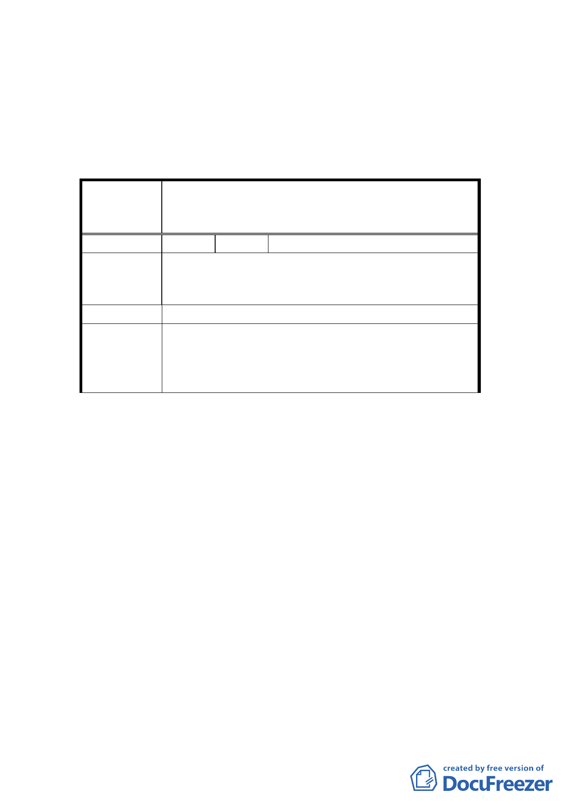

巷內退縮，避免接近路口。
（四） 超出地面以上之配水池高度需控制在 3 米以內。
二、 公民或團體所提意見審決如後附綜理表。
臺北市都市計畫委員會公民或團體所提意見綜理表
變更臺北市士林區至善段 4 小段 474 等 3 筆地號及華
案 名 岡段 4 小段 274 等 7 筆地號部分土地保護區為自來水
事業用地計畫案
編 號 １ 陳情人 劉家宏、劉勝旋
我不願意於我土地上（士林區華岡段四小段 274 地
陳 情 理 由 號、華岡段四小段 255、257 地號）設置「新安配水
池暨加壓站」。
建 議 辦 法 請另尋他處。
本案同意依臺北自來水事業處說明，採分段式先行審
委 員 會 決 議 議至善段 4 小段 474 等 3 筆地號（永嶺配水池暨加壓
站）之變更，並撤銷華岡段 4 小段 274 等 7 筆地號（新
安配水池暨加壓站）之變更。
討論事項二
案名：變更臺北市士林區三玉段一小段 22-3 地號等體育場
用地（天母運動公園）為臺北市立體育學院用地主要
計畫案
說明：
一、本案係市府 94 年 11 月 3 日以府都規字第 09419486103
號函送到會，並自 94 年 11 月 4 日起公開展覽 30 天。
二、法令依據：都市計畫法第 27 條第 1 項第 4 款。
三、申請單位：臺北市政府（臺北市立體育學院）。
四、計畫範圍：詳計畫圖所示。
五、變更理由及內容：詳計畫書所示。
六、說明會日期：94 年 11 月 16 日。
4